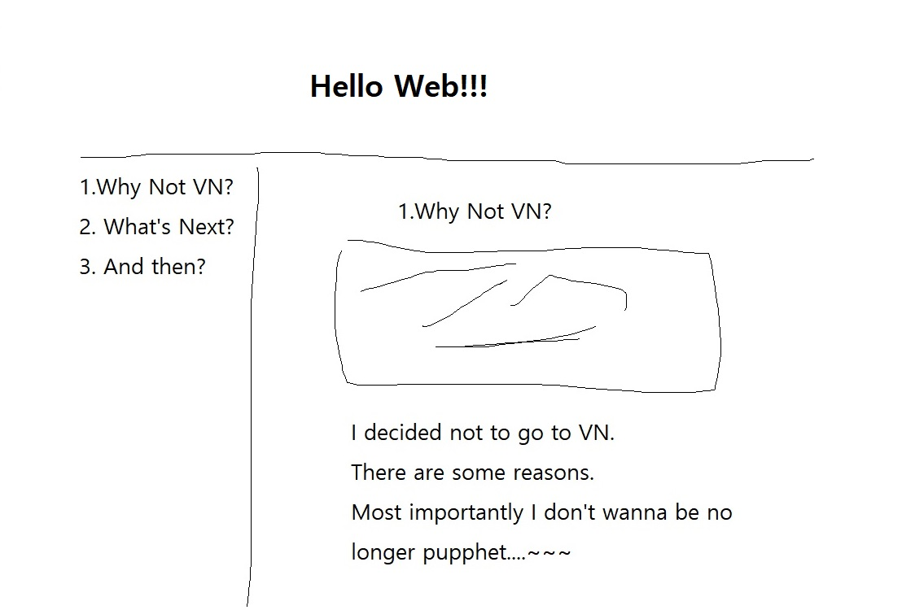

개발자가 되는 이야기
안녕하세요, 임채동입니다.
제가 처음으로 만든 웹사이트에 오신걸 환영합니다.
여기선 제가 왜 개발자의 길을 걷게 되었는지,
그리고 어떤 경로로 개발자가 되어가고 있는지
블로그 형식으로 단계별로 알수있는 사이트입니다.
별것 없는 사이트지만 개발이라는 분야에 입문하여
처음으로 만드는 역사적인 사이트이니 재밌게 봐주세요 ^^
기획안

최초 기획안은 위와 같습니다.
1번부터 시작하여 어떤 생각으로 커리어 전환을 계획하게 되었는지
어떤 과정을 통해 공부할 계획인지 등에 대해
개략적으로 적어보도록 하겠습니다.